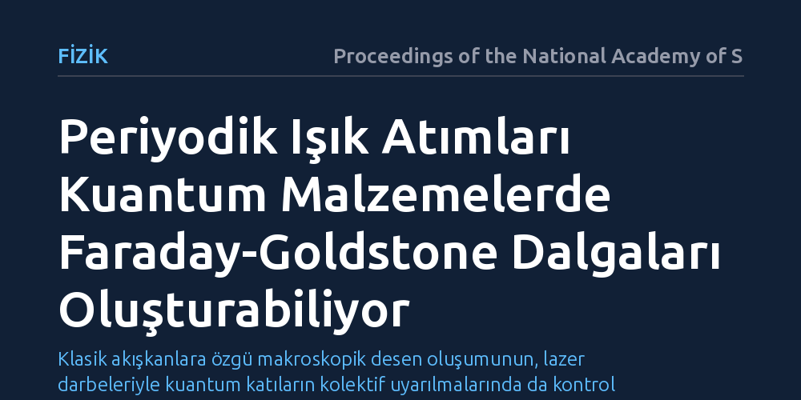

FIZIK · Proceedings of the National Academy of Sciences · 2026-09-08
Araştırmacılar, klasik sıvılarda titreşimle oluşan Faraday dalgalarının kuantum malzemelerde ışıkla tetiklenip tetiklenemeyeceğini kuramsal olarak inceledi. Geliştirilen kuram, periyodik ışık atımlarının sürekli simetrisi kırılmış katılarda parametrik rezonans yoluyla 'Faraday-Goldstone dalgaları' üretebildiğini gösteriyor.
Klasik akışkanlara özgü makroskopik desen oluşumunun, lazer darbeleriyle kuantum katıların kolektif uyarılmalarında da kontrol edilebileceğini ortaya koyuyor.

Bir kabın içindeki sıvıyı dikey olarak belirli bir ritimle salladığınızda, yüzeyde kendiliğinden düzenli geometrik desenler ve çizgiler belirir. 19. yüzyılda Michael Faraday tarafından keşfedilen bu fenomen, klasik akışkanlar mekaniğinde parametrik rezonansın en bilinen örneğidir. Dışarıdan uygulanan periyodik sarsıntı sıvının iç hareketleriyle eşleştiğinde, karmaşa yerine kararlı ve simetrik dalga yapıları ortaya çıkar.
Araştırmacıların peşine düştüğü temel soru, benzer bir desen oluşumunun kuantum malzemelerde de gerçekleşip gerçekleşemeyeceğidir. Katı bir kristali mikroskobik ölçekte mekanik olarak sallamak mümkün olmasa da, gelişmiş lazerler malzemeleri ışık atımlarıyla periyodik olarak sürme imkanı tanır. Çalışma, ışığın kuantum katıların kolektif uyarılmalarıyla rezonansa girerek klasik sıvılardakine benzer desen dalgaları üretip üretemeyeceğini sorguluyor.
Bu araştırma bir laboratuvar deneyi değil, kuantum alan teorisi ve istatistiksel mekanik ilkelerine dayalı kuramsal bir modellemedir. Yazarlar, sürekli simetrisi kendiliğinden kırılmış kuantum katıları incelemeye aldı. Süperiletkenler ve manyetik kristaller gibi bu malzemelerin en belirgin özelliği, sistemin düşük enerjili kolektif titreşimleri olan Goldstone modlarını barındırmasıdır.
Araştırmacılar, bu kuantum malzemelerin periyodik lazer darbeleriyle aydınlatıldığı bir etkileşim modeli kurguladı. Klasik akışkanlardaki mekanik çalkalamanın rolünü üstlenen optik alanın, kuantum malzemenin iç parametrelerini zamanla nasıl modüle ettiği ve bunun hangi koşullarda parametrik rezonansa yol açtığı matematiksel olarak türetildi.
Kuramsal hesaplamalar, uygun frekans ve şiddetteki optik atımların kuantum malzemedeki Goldstone modlarını parametrik rezonansa sokabileceğini gösterdi. Bu rezonans neticesinde, mikroskobik düzeydeki kuantum uyarılmaları eşzamanlı olarak büyüyerek makroskopik ölçekte uzaysal desenler meydana getiriyor.
Yazarlar ortaya çıkan bu yeni kolektif yapıyı 'Faraday-Goldstone dalgaları' olarak adlandırıyor. Tıpkı klasik sıvılarda yüzey dalgalarının uyarılma frekansının yarısında kilitlenmesi gibi, kuantum katıda da ışığın frekansıyla senkronize olan belirli dalga boyları öne çıkıyor ve malzeme içinde düzenli bir desen oluşuyor.
Elde edilen sonuçlar, kuantum malzemelerin dengede olmayan dinamik hallerini lazer darbeleriyle kontrol etme (Floquet mühendisliği) alanında önemli bir kuramsal açılım sağlıyor. Katı haldeki bir malzemenin mikroskobik kuantum özellikleri, dışarıdan uygulanan ışığın parametreleri ayarlanarak makroskopik düzeyde desenlenebilir hale geliyor.
Bununla birlikte, bulguların henüz kuramsal bir öngörü niteliğinde olduğu ve laboratuvar koşullarında doğrulanması gerektiği unutulmamalıdır. Model, deneysel katı hal fizikçilerine ultra hızlı lazer spektroskopisi kullanarak bu yeni dalgaları hangi malzeme ve frekans aralıklarında gözlemleyebileceklerine dair net bir teorik çerçeve sunuyor.